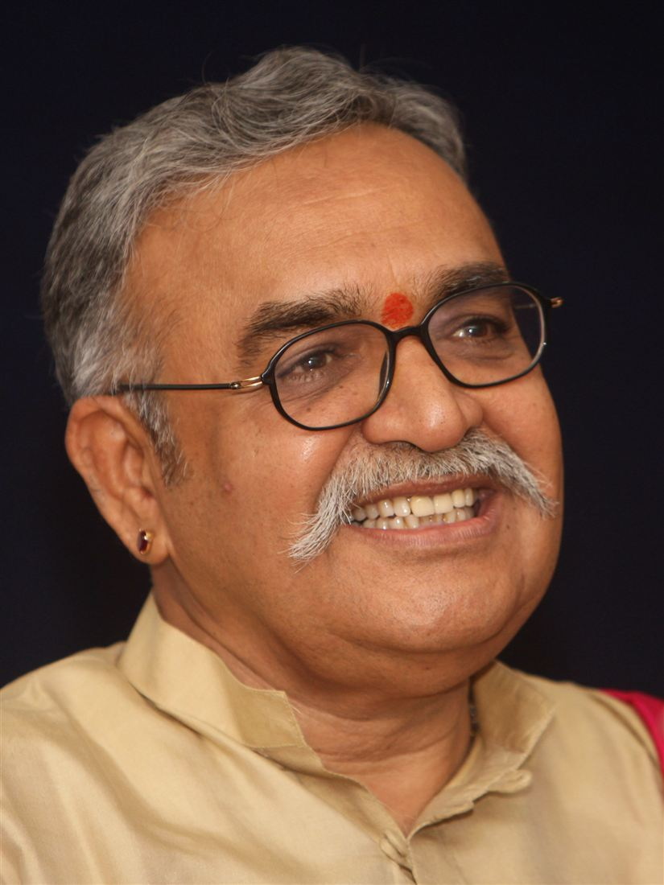

Vedic Scholar · Motivational Speaker · Cultural Voice of India
A perspectives of Vedas, Upanishads and cultures of the East
Location
Based in Mysuru — City of Palaces
State of Karnataka, India
Credentials beyond the boundaries of India

Services
C. V. Gopinath an expert in engineering & management is a person blended with deep roots in tradition and commitment to society, yet one who strides the vistas of modernity.
From Bhagavadgeetha to boardrooms, from Himalayas to homes.
Explore His Journey →| Icon | Media Category | Description | Action |
|---|---|---|---|
| 📰 | Articles by C V Gopinath and media coverage. | Explore Print → | |
| 📻 | Audio | Discourse on OM, the Primordial, in 18 Indian languages, and radio talks. | Listen Audio → |
| 🖼️ | Visual | Motivational talks and interaction with Civil Services aspirants. | View Gallery → |
| 🎥 | Audio-Visual | Globally celebrated Audio-Visual presentation in English, Kannada and Hindi on the subject of "Himalayas on Vedic concepts" - Globally known AV show on Pilgrimage and Manasarovar. | Watch Videos → |
Decades of study in Bhagavadgeetha and Vedic philosophy — from Upanishads to Puranas. From Panchatantra to Chandamama stories to rejuvenate children's minds.
Motivational speaking across Karnataka and India — touching hearts, transforming lives.
Articles written by C V Gopinath as well as written about him.
Governors to eminent personalities both within and outside India.
"He weaves a tapestry of ethereal beauty and embraces his audience in the eternal spirit of India… The Audio-Visual presentation on ‘Pilgrimage to Kailas and Manassarovar’ of C.V.Gopinath is somewhat like Panditji’s Discovery of India."
— Late Dr. L.M. Singhvi, Eminent Jurist & Formerly Indian High Commissioner to U.K."Shri C.V. Gopinath, with his erudite scholarship and devotion to revive roots of our great cultural heritage is a natural cultural Ambassador of Karnataka."
— T.N. Chaturvedi, Governor, Karnataka"As a man, Shri Gopinath is devoid of many weaknesses which beset human mind and with his honest and upright devotion to promote traditional Indian values, I am sure he shall always bring dignity to all those who may come in his contact and as well earn him their respect."
— Bhure Lal, Secretary (Co-ord. & Plg.), Cabinet Secretariat"Although we spent the time inside a dark room, it was possible to feel a strange light beginning to glimmer inside the inner self… our deep gratitude to you for enabling us to undergo such a moving and enlightening experience."
— Bharat Vyas, Asstt. Resident Representative (Programme), UNDP, India"It is heartening to learn that, after a distinguished career in the civil services, you have devoted yourself to guiding and mentoring civil services aspirants in the areas of ethics and moral leadership."
— Dr. Himanta Biswa Sarma, Chief Minister of Assam"In today's information rich society, there are many onslaughts of visual and audio information, but harnessing of different media in a manner to generate a completely new kind of experience in the audience was something which only a maestro like Mr. Gopinath could put together. It is remarkable that the audience which constituted largely of restless teenagers, whose span of attention does not usually exceed a few minutes, was held spell bound for over 2 hours."
— M.M. Pant, Executive Director, Vivekananda Institute of Professional StudiesRead all 30+ impressions from eminent personalities across India and beyond.
View All Impressions →